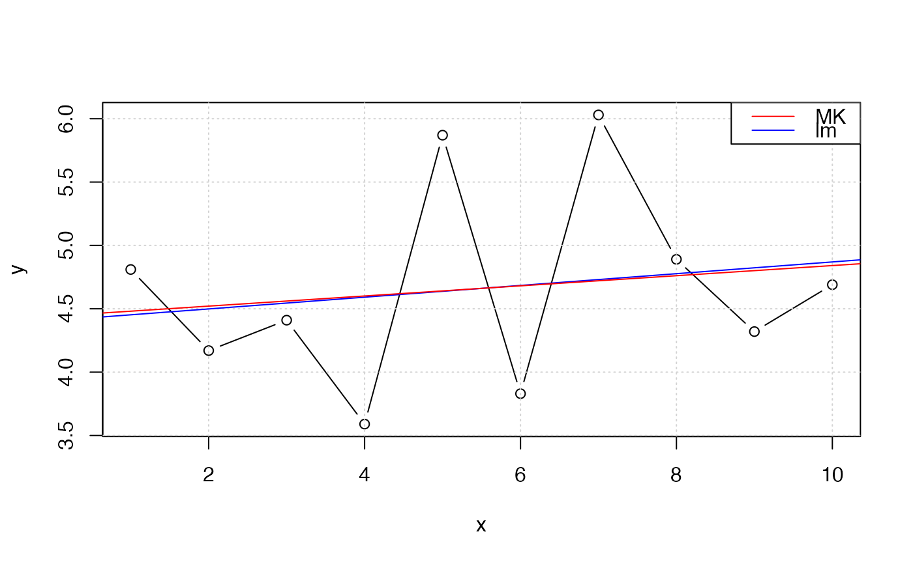

If valid observations <= 5, NA will be returned.
mkTrend_r(y, ci = 0.95, IsPlot = FALSE)
mkTrend(y, x = seq_along(y), ci = 0.95, IsPlot = FALSE)numeric vector
critical value of autocorrelation
boolean
(optional) numeric vector
Z0 : The original (non corrected) Mann-Kendall test Z statistic.
pval0: The original (non corrected) Mann-Kendall test p-value
Z : The new Z statistic after applying the correction
pval : Corrected p-value after accounting for serial autocorrelation
N/n*s Value of the correction factor, representing the quotient of the number
of samples N divided by the effective sample size n*s
slp : Sen slope, The slope of the (linear) trend according to Sen test
mkTrend is 4-fold faster with .lm.fit.
slp is significant, if pval < alpha.
Hipel, K.W. and McLeod, A.I. (1994), Time Series Modelling of Water Resources and Environmental Systems. New York: Elsevier Science.
Libiseller, C. and Grimvall, A., (2002), Performance of partial Mann-Kendall tests for trend detection in the presence of covariates. Environmetrics 13, 71--84, doi:10.1002/env.507 .
fume::mktrend and trend::mk.test
x <- c(4.81, 4.17, 4.41, 3.59, 5.87, 3.83, 6.03, 4.89, 4.32, 4.69)
r <- mkTrend(x)
r_cpp <- mkTrend(x, IsPlot = TRUE)
